Geromantiseerde Status
8 January, 2018
23:41
De auto zoals we hem zagen bij de garage | En zo toen we hem voor de eerste keer hadden weten te parkeren |
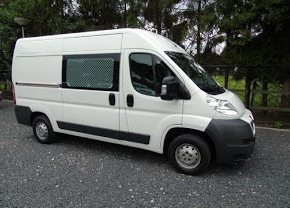
| 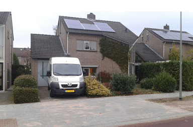
|
De gaten voor de koelkast, elektra en LPG
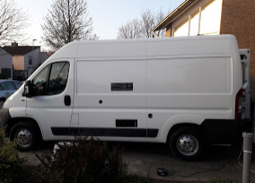
| Het aanbrengen van anti-dreunplaten
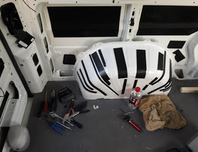
|
Het isoleren van de vloeren
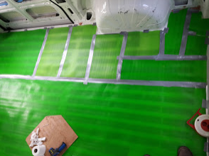
| Het isoleren van de wanden
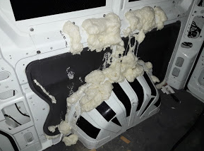
|
De bouw van het eerste bed
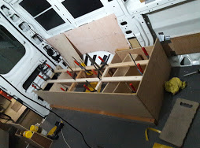
Screen clipping taken: 09-Jan-18, 0:31
| De LPG tank en vaste vulaansluiting
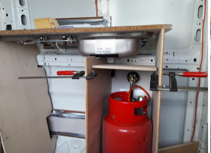
Screen clipping taken: 09-Jan-18, 0:31
|
Als we de achterdeur openen
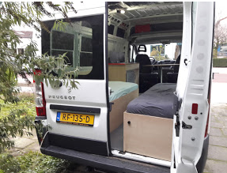
| Naar binnen via de achteringang komen we binnen in de eerste slaapkamer
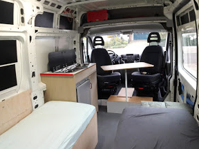
|
Als we doorlopen komen we in de voorkamer
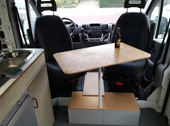
| Slaan we links af, dan komen we in de keuken, voorzien van alle gemakken
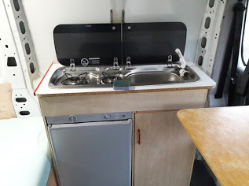
|
Vanuit de bestuurdersstoel kijken we uit op Stef's bed
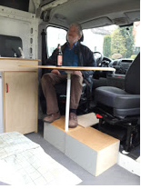
| Wat je met wat plnaken en lijmklemmen al niet kunt bereiken:
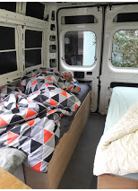
|
Vanuit de bijrijdersstoel heb je goed zicht op …
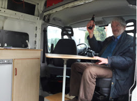
| … de keuken
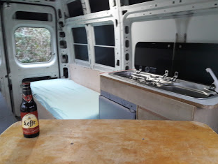
|
Potten en pannen opgeborgen in het voetstuk van de tafel
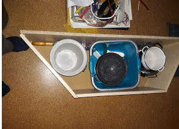
| De fietsen kunnen we gemakkelijk kwijt in de bijkeuken
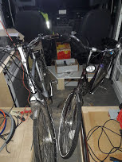
|
De eerste aanzet voor de bovenkastjes
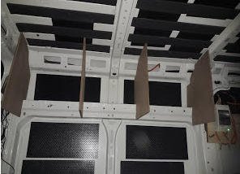
| v |
| v |
|
|
Created with Microsoft Office OneNote 2007
One place for all your notes and information